This tool is an exploratory tool, allowing users to select which town in Massachusetts they want to explore the data. It addresses the following data analytic questions: Where employees worked, and where they lived, and what regions’ demographic characteristics, either as a working area, or living area.
The Longitudinal Employer-Household Dynamics (LEHD) program is a branch of study for the United States Census Bureau. The LEHD program produces simplified but detailed, public-use information combining Federal, State, and Census Bureau data on employers and employees. Currently, this tool applies the year 2015 year of LEHD data. More information about that data can be found here.
This tool is currently not available to the public, and requires a login here.
When you open the tool it is a centered Massachusetts Chorepleth map. The corresponding toggle button, the "TOWN" button highlighted red, is found on the top right.
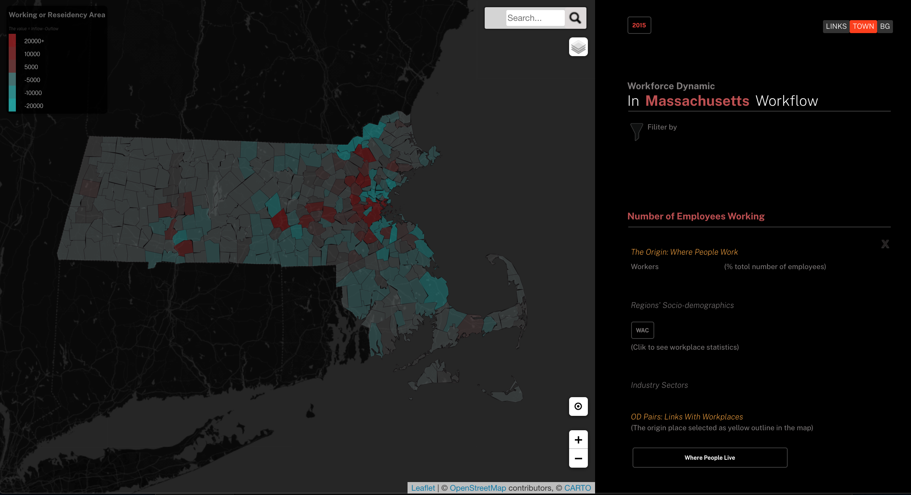
Color code :Towns identify as working areas are colored more towards red, and residency areas more towards green. The tooltip shows the location's attributes that including the inflow and outflow value of the place.
Inflow: The number of workers worked there. Outflow: The numner of workers were lived there. Working area: Inflow value bigger than Outflow value. Residency area: Inflow value smaller than Outflow value.
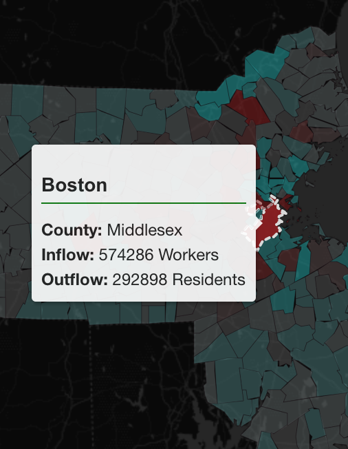
When click the "BG" toggle button at the top right, the Massachusetts Chorepleth map will update from the town view to the geoblock group view.
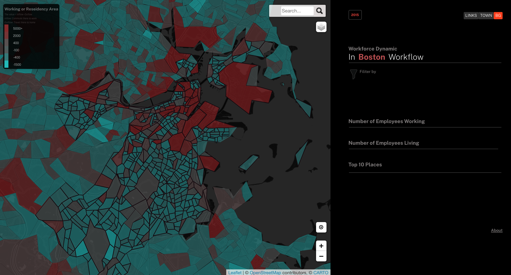
Boston colored in purple. It shows that Boston as a working area has more people working there than living there.
It provides another visualization model to visualize these data. It shows the number of employees' distribution with different geographic hierarchies.
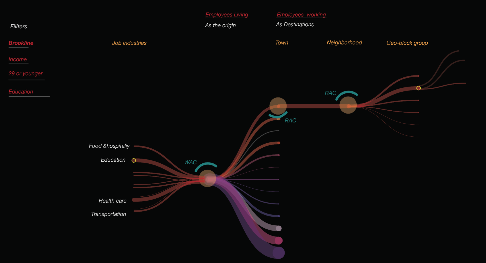
The following steps are to call the Origin to Destinations data to show on the map.
One location has two Origin to Destination(O-D) pairs. It could be the origin place of people lived there, also the origin place of people worked there. 1. Where was the Origin place of workers?2. Where were destinations from the origin place? 3. Too view the regions’ demographic statistic, either as the origin, or detinations.
Type the town name, and click to seach
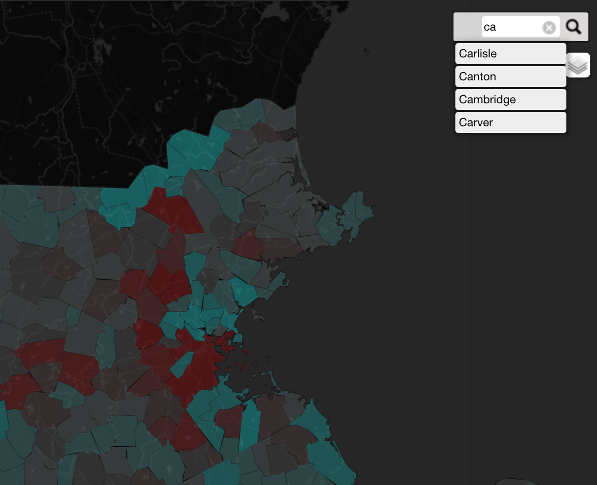
The map will zoom into your search location, and highlight the outline of the area.
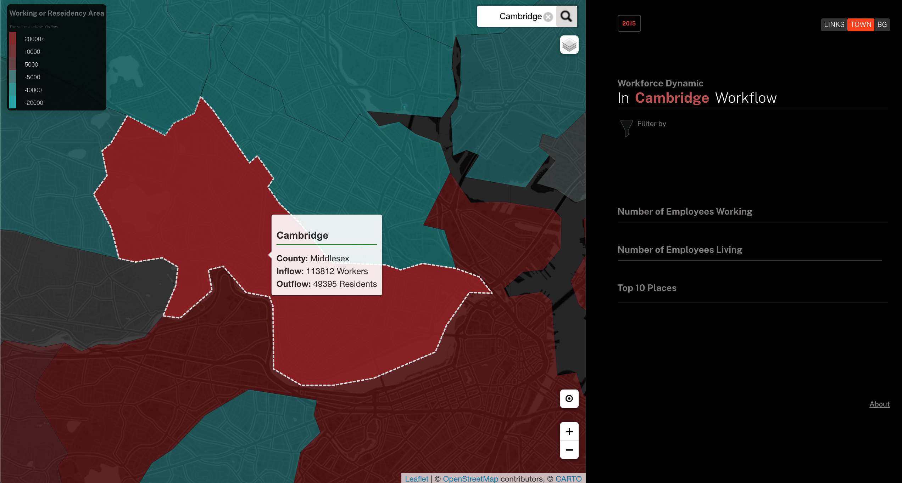
Click each underline decorated title to open each panel. The red colored text indexes which one you have selected.
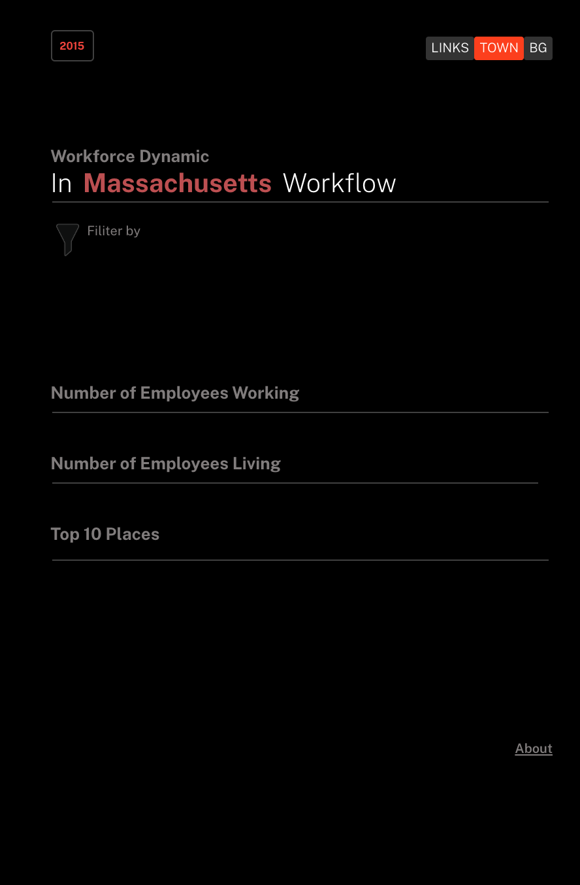
Choosing one Origin to Destination(O-D) pair to look at one time:
For example: Selecting "Number of Employees working" as the origin to show people worked there.
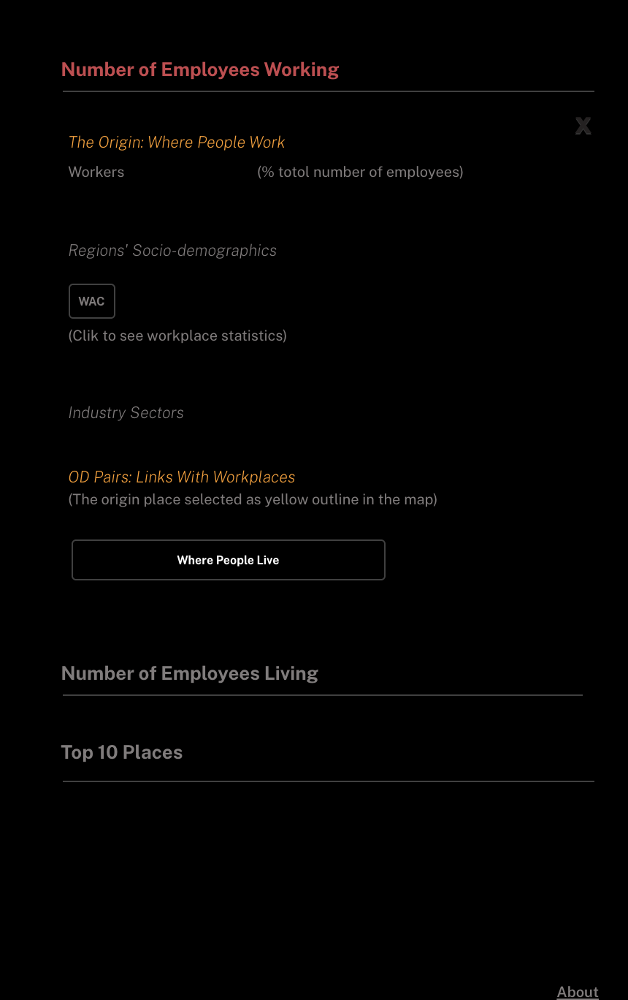
Selecting one O-D relationship at one time to update the map:
For example: Selecting "Number of Employees Living" as the origin to show people lived there.
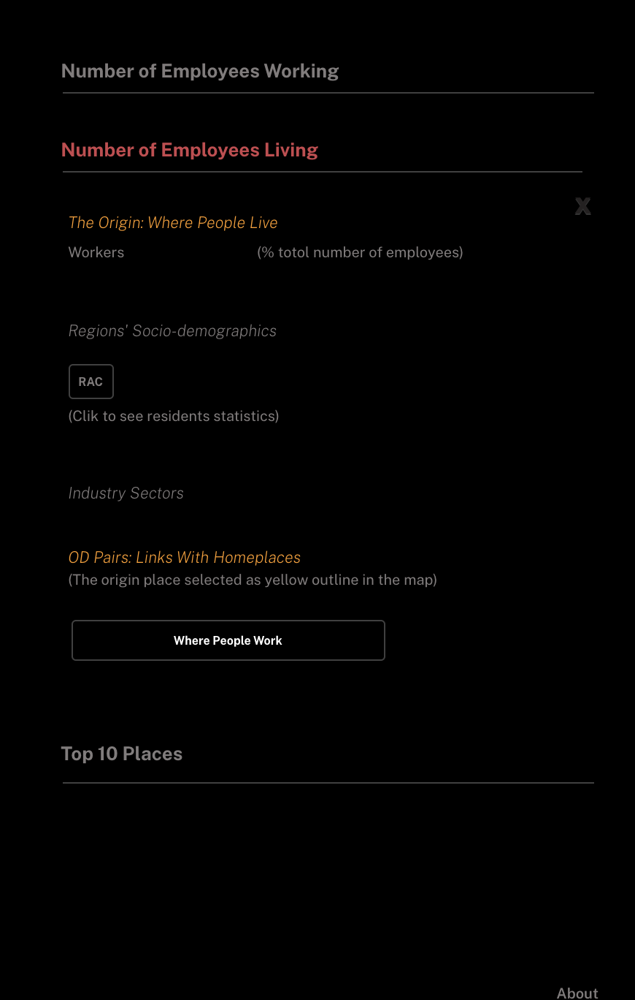
Summarizes the mumber of workers at the selected location, and its O-D Pair.
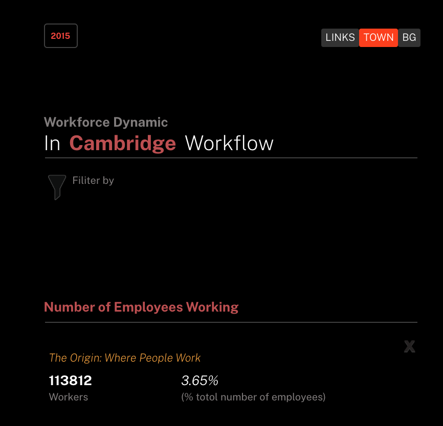
Hover over the bar to see the value of each industry sector.This bar chart includes 20 sectors.
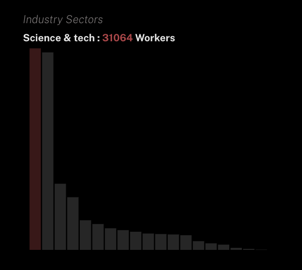
Click the "WAC" or "RAC" button in each panel, to see the origin place statistic table.
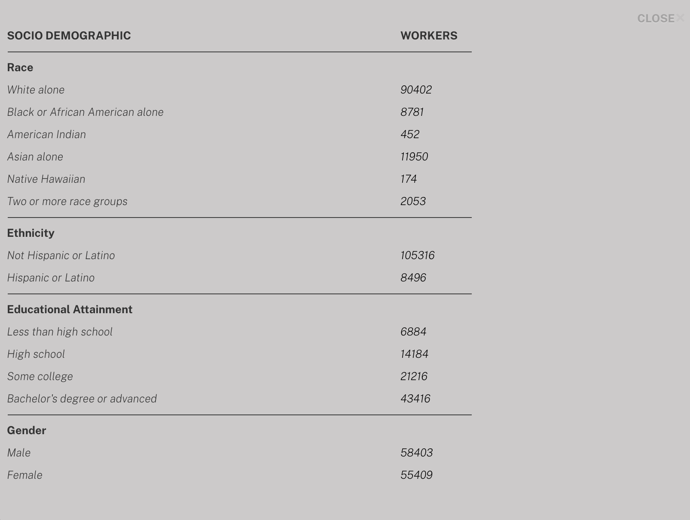
Different demographic slices for the total from WAC data. c000 should be equal to s000 in work_od; both of these are the total number of workers who work in this location. The others are different ways of slicing the data. See the LODES documentation for explanation.
Click the button "Where people Live" and "Where people Work" to see destinations distribution from the origin.
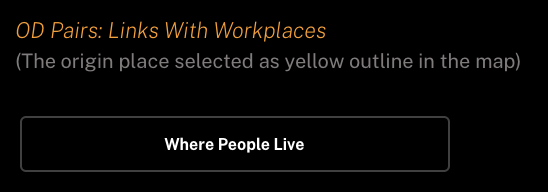 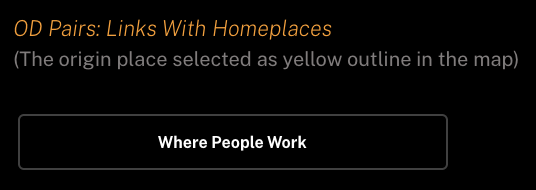
To avoid flow path clustering and overlapping each other, this map doesn't show links from the origin to destinations. It applied a chorepleth map method to visualize O-D flows. And highlighted the outline of origin places in the map to identify as the origin of flows. The saturation of the color change indexes the number of workers.
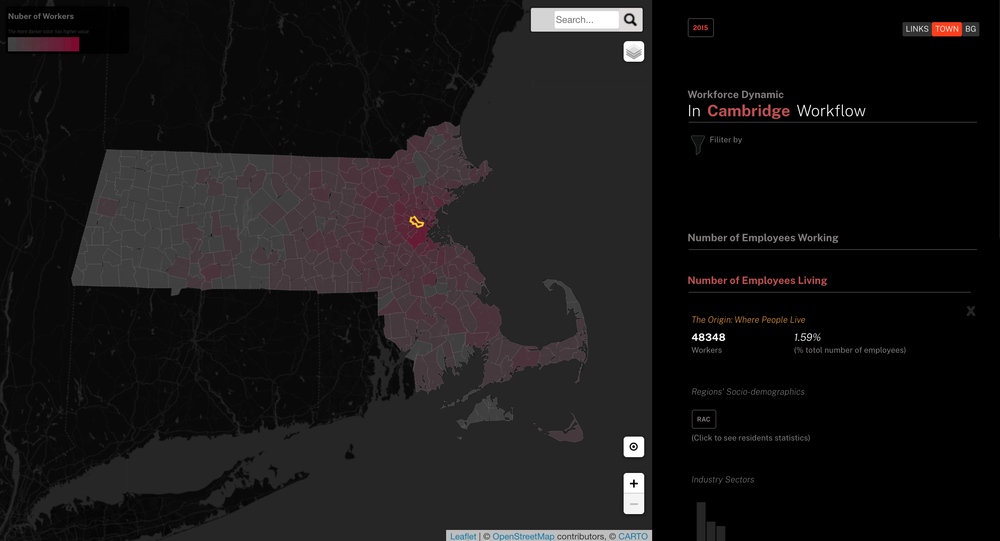
List the most concentration place based on the filtered map.
The table will update as the map updates, to see destination information.
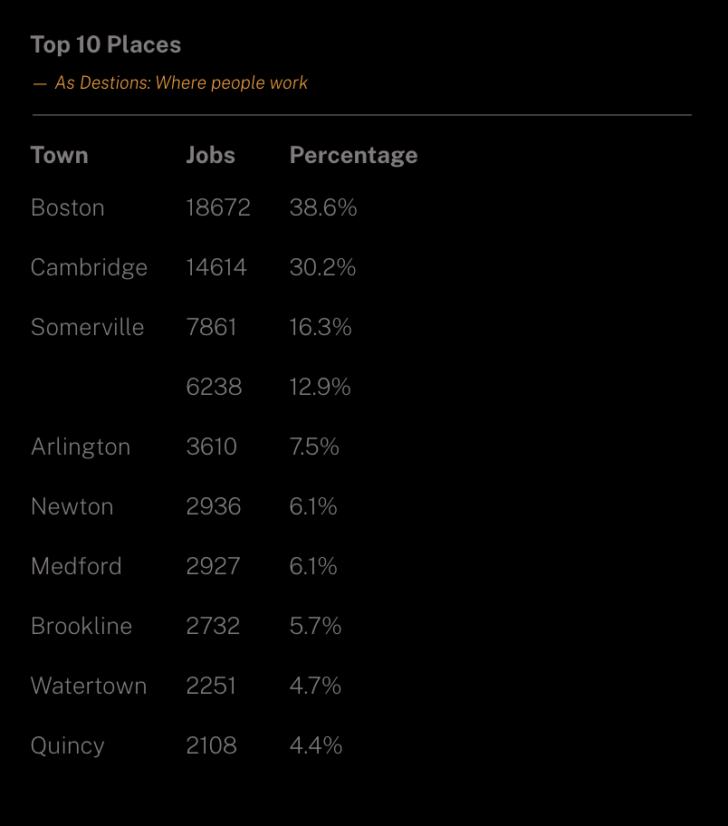
The icons on the bottom right side of the screen are for changing the map view.
In the top left side of the panel, click the filter icon to open the filter sections
Select a variable, click confirm to call the update pattern to the map
The top 10 list table will also update by filter choice
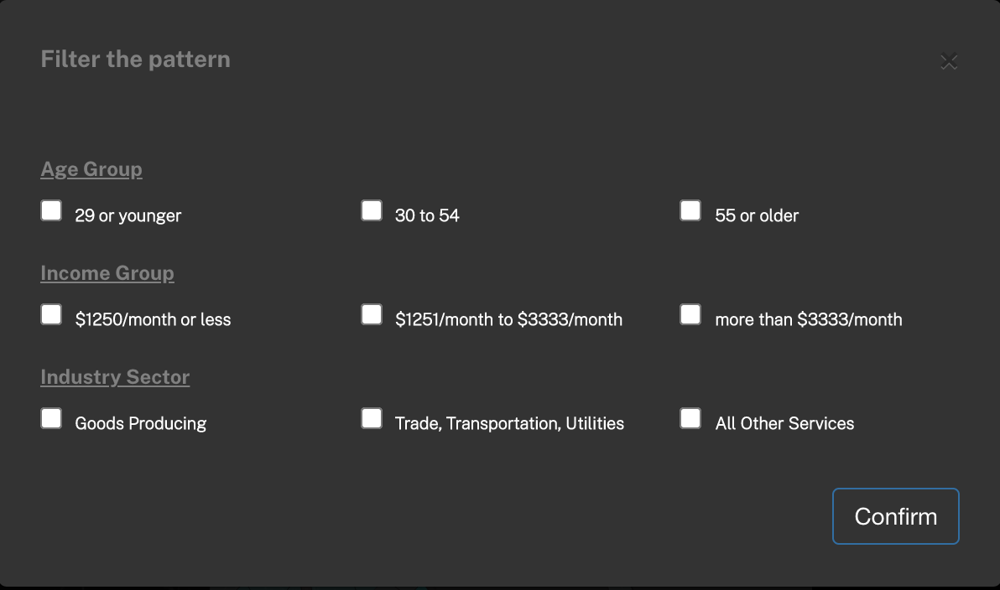